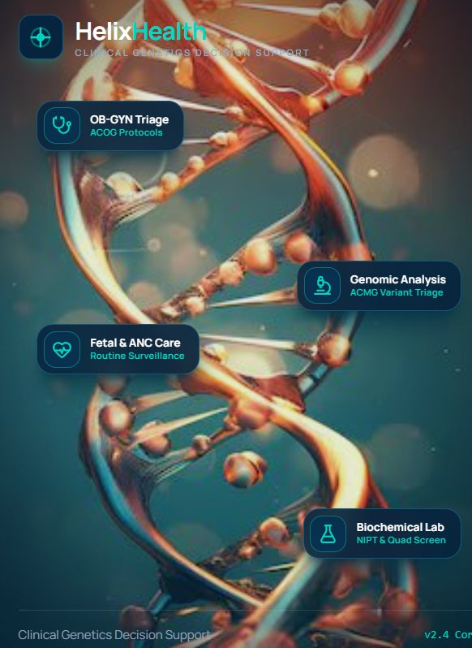

Bringing Clarity to
Every Genetic Referral Decision
Organize clinical history, family pedigree information, and antenatal care data into structured, evidence-based genetic referral recommendations.

Explore HELIX in a Controlled Demonstration Environment
Synthetic Data OnlyHELIX currently uses synthetic patient data to demonstrate clinical assessment, referral evaluation, workflow management, governance, and structured reporting. This environment is provisioned exclusively for operational evaluation and does not process live production Protected Health Information (PHI).
Integrated Clinical Workflows
Engineered to bridge clinical obstetric records with specialized genetic evaluation through modular data captures.
Clinical History
Structured clinical information for pathway-specific assessments, standardizing phenotypic data capture across clinical staff.
Family Pedigree
Three-generation pedigree construction using standardized clinical symbols, documenting inheritance patterns and maternal lineages.
Routine Antenatal Care
Structured obstetric history, demographics, ultrasound markers, and maternal serum screenings unified in one view.
Referral Evaluation
Server-side evaluation against configured clinical criteria and guideline algorithms to identify candidates for specialty genetics.
Six Clinical Pathways
Support structured genetic assessment across key clinical referral scenarios encountered in modern obstetric and gynecologic practice.
Hereditary Cancer Risk
Assess clinical and family history relevant to hereditary breast, ovarian, uterine, and colorectal cancer referral criteria.
Preconception Carrier Screening
Support structured carrier screening assessment workflows for cystic fibrosis, spinal muscular atrophy, hemoglobinopathies, and expanded pan-ethnic panels.
NIPT Results
Organize and evaluate non-invasive prenatal test assessment metrics including fetal fraction, aneuploidy high-risk calls, and low fetal fraction retest criteria.
Abnormal Ultrasound Findings
Capture relevant structural malformations and soft markers including nuchal translucency elevation, cardiac defects, and skeletal anomalies for rapid triage.
Infertility & Recurrent Pregnancy Loss
Support structured assessment of relevant reproductive history, prior spontaneous losses, parental karyotype indications, and microdeletions.
Positive Family History
Document and cross-reference family history of known monogenic diseases, early onset cardiac arrest, developmental delay, or consanguineous partnerships.
A Clear Process from Assessment to Clinical Review
Deterministic execution ensures patient data progresses through standardized checkpoints before specialist referral packaging.
Collect Clinical History
Capture patient clinical and family history through structured questionnaires tailored to obstetric indications.
Build Family Pedigree
Create a structured three-generation family pedigree using standardized symbols and documented degrees of kinship.
Evaluate Clinical Criteria
Evaluate information using the server-side deterministic engine against active ACOG and ACMG guideline logic.
Generate Referral Recommendations
Generate structured outcomes and supporting evidence summaries for attending provider attestation.
Three-Generation Family History Visualization
Structure family relationships and clinically relevant genetic history through an interactive pedigree editor compliant with standard clinical genetic nomenclature.
Guideline-Informed Clinical Decision Support
HELIX organizes clinical information and supports structured referral assessment using configurable clinical criteria calibrated against recognized professional society statements. Clinical governance rule configurations are strictly maintained separately from operational codebases.
Hereditary Cancer Risk
Hereditary Cancer Syndromes and Risk Assessment. Establishes thresholds for pedigree evaluation, early onset criteria, and multi-gene panel referrals.
Carrier Screening
Carrier Screening for Genetic Conditions. Details pan-ethnic cystic fibrosis, SMA, hemoglobinopathy triage, and expanded carrier screening partner testing.
NIPT and Prenatal Screening
Screening for Fetal Chromosomal Abnormalities, endorsing updated SMFM guidance on cell-free DNA, discordant findings, and ultrasound correlation.
Ultrasound Findings
Ultrasound in Pregnancy. Informs indications for diagnostic testing (chorionic villus sampling and amniocentesis with chromosomal microarray) upon anomalous findings.
Ethical Considerations
Ethical Considerations for Genetic Testing and Counseling in Obstetrics and Gynecology. Emphasizes patient autonomy, structured pre-test education, non-directive counseling, and management of variants of uncertain significance (VUS).
Core Clinical Principles Embedded in HELIX
HELIX supports structured clinical assessment and does not replace professional medical judgment, genetic counseling, or independent clinical decision-making.
Dual-Track Clinical Governance
Segregated lifecycle state machines maintain total transparency across clinical referral submissions and underlying algorithmic rule configurations.
Clinical Referral Workflow
Patient Assessment TrackClinical Criteria Governance
Ruleset Lifecycle TrackPrivacy and Security at the Core of Clinical Genetics
HELIX is designed with privacy, controlled access, data integrity, and clinical accountability as foundational architectural priorities.
Role-Based Access
Strict separation between attending gynecologists, clinical genetic counselors, nurses, and practice system administrators.
Secure Authentication
Multi-factor authentication protocols, session expirations, and hospital enterprise identity integration capabilities.
Audit Accountability
Full audit trails capturing every record view, pedigree mutation, assessment recalculation, and report transmission.
Data Integrity
SHA-256 cryptographic digest verification verifying that referral data remains unmodified during downstream transit.
Built with HIPAA Security Principles in Mind
The HELIX infrastructure aligns with federal requirements under the Health Insurance Portability and Accountability Act (HIPAA) Security and Privacy Rules. Security controls are engineered across three regulatory tiers:
Role assignment protocols, workforce authorization workflows, regular automated vulnerability triage, and business associate governance readiness.
AES-256 resting data encryption, TLS 1.3 in-transit protections, unique user identification tokens, and automated emergency session termination.
Isolated cloud data centers, zero local caching on unmanaged browser endpoints, and hardware token access limits.
Security Architecture Disclosure: Described safeguards reflect platform engineering design specifications. HELIX does not process live production Protected Health Information within this evaluation environment.
Secure and Accountable Architecture
Designed for clinical repeatability with zero client-side diagnostic logic execution.
Server-Side Evaluation
FastAPI backend executing isolated evaluation pipelines ensures that clinical criteria logic cannot be altered on the client workstation.
Role Enforcement
Fine-grained permissions restrict pedigree modification, referral submission, and criteria sign-off to authorized personnel.
SHA-256 Digests
Cryptographic hashes computed over clinical intake inputs allow instantaneous detection of post-submission tampering.
Append-Only Audit
Immutable database records preserve complete decision history and time-stamped clinician sign-offs for legal and clinical review.
Structured Reports for Clinical Review
Automated generation of standardized referral packages designed for seamless transmission into electronic health records and geneticist consult queues.
Bring Greater Structure to Genetic Referral Decisions
Explore a more organized approach to clinical genetics assessment and referral workflows with our synthetic evaluation workbench.